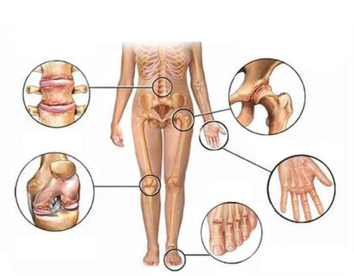
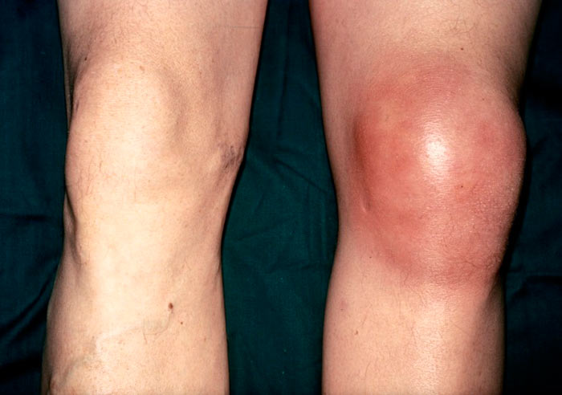
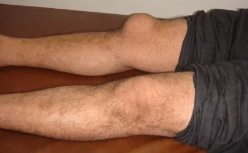
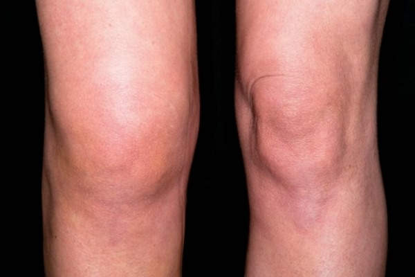

FELFEDEZTÉK AZ ÍZÜLETEK HELYREÁLLÍTÁSÁNAK TITKÁT
Dr. Horváth Róbert mindenkit megdöbbentett, amikor megosztotta a világgal az ízületek helyreállításának titkát. Ezzel elvesztette a tekintélyét a gyógyászat és gyógyszeriparban, valamint számos fontos személy támogatását.
"Attól függetlenül, hogy mások mit mondanak, mindig tartsuk észben: Az ízületi- és gerincbetegségek még időskorban is gyógyíthatók"
AZONBAN EGY FONTOS DOLOGRÓL NEM SZABAD MEGFELEDKEZNÜNK: HA NEM KEZELJÜK IDEJÉBEN AZ ÍZÜLETI PROBLÉMÁKAT, AKKOR AKÁR TOLÓSZÉKBE IS KERÜLHETÜNK! AZ ÍZÜLETI GYULLADÁSOK ÉS MEGBETEGEDÉSEK 3 ÉVEN BELÜL ELPUSZTÍTJÁK A PORCSZÖVETEKET
A szakember több mint 35 év orvosi tapasztalattal rendelkezik.
A TV2 csatornáján leadott különleges adásban a mozgásszervi megbetegedésekkel foglalkoztak, ezek után a híres orvos, Dr. Horváth Róbert interjúja következett. Állítása szerint még a legelhanyagoltabb ízületi betegség is gyógyítható.
Riporter: Üdvözlöm, Dr. Horváth! Az emberek hajlamosak azt gondolni, hogy az ízületi betegségek kialakulása elkerülhetetlen az öregedés során, ön egyetért ezzel a kijelentéssel?
Dr. Horváth Róbert: Szép napot mindenkinek! Nem, én egyáltalán nem így gondolom! A betegek sajnos elhiszik az olyan orvosok véleményét, akik szerint az ízületi gyulladás, a hátfájás, és más ízületi betegségek gyógyíthatatlanok. Bíznak az olyan drága gyógyszerekben, amelyek csak a fájdalmat enyhítik, de a betegséget nem orvosolják, pedig valójában az ízületi betegségek és a gerincproblémák kortól függetlenül kezelhetők. Egy másik, hasonló példa: egy idősebb embernek eltörik egy csontja, és több műtétet kell végezni rajta, de a sérülései idővel meggyógyulnak, csak egy kicsit tovább tart, mint egy fiatalabb szervezet esetében. Az ízületek még az idősebb korban is helyreállíthatók, így mindenki megfiatalodhat!
És ez még nem minden. Bizonyos feltételekkel még az otthoni gyógyulás sem kizárt. Mindössze egy kevés odafigyelésre és egy kis segítségre lesz szükség a teljes felépüléshez. Az én betegeim közül is sokan a drága és kényelmetlen orvosi vizsgálatok nélkül gyógyultak meg.
Az elégedett betegeim levélben köszönték meg nekem a segítséget, amelyek tartalmát örömmel megosztom mindenkivel (a Dr. Horváth Róbertnek címzett köszönőleveleket a cikk alatt olvashatják).
Az ízületek helyreállítása a megfelelő vérkeringésben rejlik. Mi ismerjük a titok nyitját!
Degeneratív változások az ízületekben
 Gerinc Térd Csípő Csukló BokaRiporter: Akkor nem igaz, hogy az orvosok szerint a vérkeringés helyreállítása lehetetlen 50 éves kor felett?
Dr. Horváth Róbert: Csak a pénzéhes orvosok mondanak ilyesmit a betegeiknek. Biztos vagyok benne, hogy ez nem igaz, hiszen én magam is hasonló helyzetben voltam, amikor tolószékbe kényszerültem egy borzalmas hátsérülést követően. Nekem elhihetik, hogy az sokkal rosszabb volt, mint 50 évesnek lenni.
Riporter: Önnek volt olyan betege, aki egy súlyosan mozgáskorlátozott állapotból épült fel?
Dr. Horváth Róbert: Természetesen, különben nem lennék
ennyire magabiztos ebben a témában. Higgyék el, hogy nem a levegőbe beszélek.
Először,
edzőgyakorlatokkal próbáltam helyreállítani a betegek fizikai állapotát. Ez egy működő módszer, de
időigényes. Azonban a betegek számára fájdalmas és kellemetlen a testmozgás, vagy egyszerűen nincs
rá idejük, ezért sokan már az elején abbahagyják a kezelést. Ezt a problémát figyelembe véve
próbáltam egy egyszerűbb és hatékonyabb megoldást találni, ami végre sikerült!
Riporter: Ez nagyszerű! Megosztaná velünk is ezt a megoldást?
Dr. Horváth Róbert: Természetesen! Néhány évvel ezelőtt felkértek, hogy vegyek részt egy új gyógyszer fejlesztésében a világ legkiválóbb tudósaival. Őszintén szólva a termék hatékonysága még engem is meglepett. 4500 betegen teszteltük, és az alanyok 96%-a egy hónapon belül teljesen felépült, míg a többiek is jelentős javulást mutattak. A legtöbben már heteken belül pozitív változásokat tapasztaltak. Arra a következtetésre jutottunk, hogy a termék hatékonysága nagymértékben függ az ízületek állapotától. Fontos, hogy a lehető leggyorsabban kezdjük meg az ízületi problémák kezelését.
Riporter: Értem! Mesélne egy kicsit többet erről a termékről?
Dr. Horváth Róbert: Ez a krém eredetileg néven jelent meg. Árnikakivonattal készült, és már a használat utáni héten enyhítette a hát- és ízületi fájdalmakat. Hatékonyságának titka a 4 gyógynövényben rejlik, amelyek azonnal feloldódnak, helyreállítják a vérkeringést, enyhítik a fájdalmat, valamint regenerálják a sérült porcokat és szalagokat.
Riporter: Kérem, áruljon el többet erről a csodaszerről.
Dr. Horváth Róbert: Ez nem más, mint színtiszta tudomány. A termék 4 olyan összetevőt tartalmaz, amelyek erősítik egymás hatását. Ezek többek között az árnika kivonat, metil-szalicilát, mentol és ammónia. A krémet a bőr problémás területeire vigyük fel, ahol enyhíti a fájdalmat és lehetővé teszi a teljes gyógyulást. A termék 930 000 sejtre hat, és javítja a vérkeringést a sérült területeken, elősegítve ezáltal a gyógyulási folyamatot.
Riporter: Fantasztikus!
Dr. Horváth Róbert: Most már nyugodtan kijelenthetjük, hogy a régi kezelési módszerek kora lejárt, hiszen ma már orvosi segítség nélkül is helyreállíthatjuk az ízületeinket. A krém újraindítja a sejtek működését, és megszünteti a fájdalom legfőbb okait. Az ízületi betegségben szenvedők nem csak a tünetektől szabadulnak meg, hanem teljes mértékben felépülnek.
Ez főleg annak köszönhető, hogy a termék összetételében található anyagok újraindítják a szervezet regenerálódását. A fájdalom már az első napon megszűnik, míg a teljes kezelés is csak 2-3 hetet vesz igénybe. A legfontosabb, hogy megakadályozzuk az esetleges visszaeséseket, mert ebben az esetben gyorsan meg kell ismételni a teljes kezelést. Ahogy már korábban említettem, nagyon szívesen megosztom az olyan betegek visszajelzését, akik már kipróbálták a terméket. Az interneten keresztül is folyamatosan próbálok segítséget nyújtani. Olvassák el a termék értékeléseit .
Riporter: A kizárólag a porckoronggal kapcsolatos betegségeken segít?
Dr. Horváth Róbert: A krém sejtszinten működve állítja helyre a vérkeringést, és meggyógyítja az ízületekhez és gerinchez kapcsolódó problémákat, amely lehet az isiász, az ízületi gyulladás, a hátfájás, a Bechterew-kór, az ízületmerevség, a csontritkulás, az ízületi fájdalom, a reuma, stb.
Riporter: Még most is nehezen tudom elhinni, hogy valóban létezik egy olyan gyógymód, amely ténylegesen orvosolja az ilyen betegségeket, és nem csak a fájdalmat enyhíti?
Dr. Horváth Róbert: A krém már a kezelés elején megszűnteti a fájdalmat, és idővel a betegséget is. A betegek jelentős részének ez az egyetlen esélyük a felépülésre, hiszen az ő állapotukban az egyszerű testmozgás is fájdalommal jár.
Riporter: Biztos vagyok benne, hogy a beszélgetésünk végeztével sokan tudni szeretnék, hogy hol vásárolhatják meg ezt a krémot? Különösen a hamisítványok elkerülése végett.
Dr. Horváth Róbert: Sajnos nem tudtunk megegyezni a gyógyszertári hálózatokkal, mert egyszerűen ilyen alacsony áron nem hajlandók értékesíteni a terméket. Ez ártana az üzletüknek, hiszen a drága és hatástalan gyógyszerekből jobban profitálnak.
Ezért úgy döntöttünk, hogy a krémot csak online áruljuk, ezzel megkerülve a közvetítőt egy jóval kedvezőbb áron tudjuk értékesíteni a terméket. Létrehoztunk egy kisebb weboldalt a megrendelések lebonyolításához (vevőnként csak 4 csomagot van lehetőségünk eladni), valamint utánvétes vásárlást is kínálunk, így a betegek jobban megbíznak bennünk, és meggyőződhetnek arról, hogy idejében kézhez kapják a valódi terméket. A megrendeléshez egyszerűen ki kell tölteni egy űrlapot, ezt követően az ügyfélszolgálat munkatársa felkeresi a kedves vevőt a további részletekkel.
Riporter: Ez a krém eredetileg néven jelent meg. Árnikakivonattal készült, és már a használat utáni héten enyhítette a hát- és ízületi fájdalmakat. Hatékonyságának titka a 4 gyógynövényben rejlik, amelyek azonnal feloldódnak, helyreállítják a vérkeringést, enyhítik a fájdalmat, valamint regenerálják a sérült porcokat és szalagokat.
P.S. Awesome news! Valentin Dikul personally requested for our readers a 50% discount when ordering through our website, offer valid until inclusive!
Egyszerűen adja meg az országát, nevét és telefonszámát az alábbi megrendelőlapon, majd várja munkatársunk hívását, aki tájékoztatja a további tudnivalókról, valamint a krém alkalmazásáról és áráról. Kérjük, vegye figyelembe, hogy termék mennyisége korlátozott, ezért ha kedvezményes áron szeretne hozzájutni, akkor rendelje meg minél előbb!
Tetszik? Akkor oszd meg az ismerőseiddel! Köszönjük! :)

Én is meg szeretném osztani a példátlan tapasztalataimat! Már rengeteg kenőcsöt és gyógyszert kipróbáltam, de semmi sem használt. Ahogy ön is mondta, ezek csak enyhítik a fájdalmat, de magát a problémát képtelenek megoldani. Azonban ennek a terméknek köszönhetően újra 30 évesnek érzem magam, pedig valójában 63 vagyok! Köszönöm szépen!
Üdvözlök mindenkit, Ernő vagyok (66 éves), és büszkén kijelenthetem, hogy a segítségével végre sikerült megszüntetni az ízületi gyulladásom! Szinte hihetetlen, de már az első kezeléssel elmúlt a fájdalom, remélhetőleg ez így is marad! Nagyon köszönöm doktor úr!
Sziasztok! Mónika vagyok, és Szombathelyen lakom. A krémről mindenhol csak pozitív véleményeket hallottam, de egy kicsit félek attól, hogy ez is csak egy átverés… biztos, hogy tényleg működik?
Szia, Mónika! Ahogyan azt te is láthatod, itt mindenki teljesen elégedett a készítménnyel. Nem kizárt, hogy találsz néhány negatív hozzászólást, de azok mindenhol vannak. Pl. bizonyos emberek már 1-2 használat után csodát várnak, és panaszkodnak, hogy a termék nem működik. Én személy szerint nagyon elégedett vagyok, mindenkinek csak ajánlani tudom.
Én is elégedett vagyok a termékkel, de a legfontosabb a mindennapos, rendszeres alkalmazása. Kezdetben nem figyeltem oda kellőképpen, és több alkalommal is elfelejtettem egy-egy kezelést, így érthető módon nem volt változás. Azonban amikor a használati utasítás szerint alkalmaztam, akkor már jól látható volt az eredmény!

Fantasztikus ez a megoldás, örülök, hogy rátaláltam.
Nagyon boldog vagyok, hogy felfedeztem ezt a terméket, hiszen már régóta kerestem valami hasonlót! Meg is rendeltem, alig várom a csomagot! Nagyon szépen köszönöm!
Szinte soha nem írok véleményt semmiről, de ez tényleg hihetetlen… az ízületi problémáim miatt már hosszú ideje fájtak a kezeim, de most minden megváltozott! 10 napos kezelés után teljesen megszűnt a fájdalom! Nagyon hálás vagyok a termék megalkotóinak és persze Horváth doktornak! Maga az én hősöm!
Nagyon köszönöm doktor úr! Kipróbáltam a terméket, és valóban érzem a javulást. Még várok egy hetet, és újra írok! Szerencsére a derékfájdalmam már teljesen megszűnt.
Kedves Enikő! Ne aggódjon, csak továbbra is alkalmazza a krémot a fájdalmas területeken,
és tartsa be pontosan a termék használati utasítását.
Tisztelettel, Horváth
Róbert.

A segítségeteket kérem! Már elegem van az ízületi gyulladásból, ez a kellemetlen és fájdalmas érzés teljesen megkeseríti az életemet. Már nem is tudom, mit tehetnék, rengeteg különböző gyógyszert kipróbáltam, de egyszerűen hatástalanok. :(
László, próbáld ki ezt a krémot, nem fogod megbánni. Nekem is hasonló problémám volt, és teljesen tanácstalan voltam, de szerencsére a lányom felfedezte ezt a terméket. A hátfájdalmam is véglegesen megszűnt, és azóta sincs vele gond. Csak rendeld meg, és te is meggyógyulsz!
Még soha nem rendeltem az interneten, azt sem tudom, hol kezdjem. Kérem, hogy valaki segítsen, mert nem értek a számítógépekhez.
Kedves Erzsébet! Csak add meg a pontos adataidat a megrendelőlapon, és a többit majd egyeztetik veled telefonon. Ne aggódj, az online vásárlás ma már pofonegyszerű.
Írországba is kiszállítják a terméket?
Szerintem minden országba szállítanak, talán csak Amerikába nem :)))))).
Én is hasonló helyzetben voltam, nem is olyan régen folyamatos, pokoli fájdalmat éreztem a nyakcsigolyákban, szinte másra sem tudtam gondolni. Próbáltam valamilyen megoldást találni a problémára, és így fedeztem fel ezt a cikket. Úgy döntöttem, hogy adok egy esélyt a terméknek, hiszen már úgy sem volt vesztenivalóm. A csomag 5 nappal később megérkezett, és megkezdtem a krém használatát. Alig akartam elhinni, de 14 nap után teljesen elmúlt a fájdalom. Gyorsan vegyetek minél többet, mert az akció már nem tart sokáig!
A sok pozitív vélemény mellett néhány negatívat is találtam. Mi lehet ennek az oka, talán csak egy átverés az egész?
Kedves Zoltán! Sajnos szélhámosok mindig is voltak, és lesznek is. Bizonyos weboldalak
még le is másoltak minket. Több forrásból tudjuk, hogy a legtöbb negatív vélemény
megírásáért fizettek a vetélytársaink. Ha ezen a weboldalon keresztül rendel, akkor
100%-ig garantálom a termék hatékonyságát!
Tisztelettel, Horváth Róbert.
Nekem még nem voltak ízületi panaszaim, de a nagymamám erre a termékre esküszik, azt mondta teljesen elmúltak a fájdalmai. Nem is gondoltam volna, hogy a részben egy hazai fejlesztésű készítmény, nagyon köszönjük!

Elegem van ezekből az átverésekből, én ostoba módon még el is hittem! Megvettem ezt az állítólagos csodaszert, de semmit nem használt, csak a fájdalmat enyhítette.
Kedves Zsolt! Megtudhatnám, hogy hol vásárolta meg a terméket, valamint biztos abban,
hogy a krémről van szó? Kérem azt is árulja el, hogy miképp használta.
Tisztelettel, Horváth Róbert.
Őszintén szólva már alig emlékszem, a weboldal elég gyanús volt, és a hozzászólások is kitaláltnak tűntek, úgyhogy valószínűleg átvertek. Hogy miképp használtam? Bevallom, a legtöbb férfihez hasonlóan én is csak akkor alkalmaztam a terméket, amikor éppen fájdalmaim voltak. Mi nem igazán hiszünk a ”csodaszerekben”. Nagyjából 2-3 alkalommal használtam a térdemen.
Kedves Zsolt! Sajnos kétségtelen, hogy ön csalók áldozata lett. Igaz, 2-3 alkalmazás még
az eredeti termékkel sem lenne elegendő, hiszen ez nem egy mágikus gyógyír. Kérem,
töltse ki a megrendelőlapot ezen a weboldalon, és vásárolja meg az eredeti terméket.
Tisztelettel, Horváth Róbert.
Velem is ez történt! Döbbenetes eredményeket értem el ezzel a krémmal, az ízületi gyulladásom 11 nap alatt megszűnt! Gyorsan rendelek is még néhány csomaggal a szüleimnek, hiszen az akció nemsokára lejár. Nagyon köszönöm!
Engem is meggyőztek a pozitív visszajelzések, úgyhogy rendeltem is 3 csomaggal, ráadásul a termék most kedvezményes áron kapható. Az ügyfélszolgálat munkatársa nagyon kedves volt, még egy ilyen idős hölgynek is sikerült egyszerűen elmagyaráznia a részletek, mint amilyen én vagyok. Köszönöm!
Kedves András! A termék megalkotása rengeteg időt és pénzt vett igénybe. Azonban már nem
kell tovább várnia, ön is gyorsan is egyszerűen szabadulhat meg az ízületi panaszoktól.
Tisztelettel, Horváth Róbert.
Akkor ismételten elmondom, hogy a krém hatékonyságát 100%-ig GARANTÁLOM,
amennyiben ezen a weboldalon rendelik meg. Az esetleges félreértések elkerülése végett
adja meg elérhetőségét, és várja az ügyfélszolgálat hívását a további részletekért.
Sajnálatos módon a nagy érdeklődésre való tekintettel a mostani kedvezmény már nem tart
sokáig. Ha önnek, vagy ismerősének ízületi problémái vannak, akkor rendelje meg a
terméket minél előbb.
Óvakodjanak a hamisítványoktól!
Tisztelettel,
Horváth Róbert
Szabaduljon meg
az ízületi problémáktól
gyorsan és véglegesen!
Tisztelt Dr. Horváth Róbert! Szeretném nagyon megköszönni a tanácsokat és a segítséget. Három héttel ezelőtt rendeltem meg a terméket, de már most érzem a hatását! Alig tudom elhinni, nagyon hálás vagyok önnek! Biztos, hogy minden ismerősömnek javasolni fogom ezt a készítményt! Mellékelem a beduzzadt térdemről készült képeket a kezelést megelőzően.
